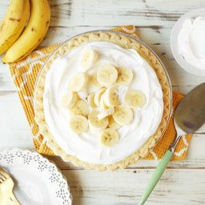

This pie is one of the greatest things on earth.
A cream pie is very much what its name suggests.
If you buy one or make one, you will usually be getting a thin shortcrust pastry
filled past the crust with thick creamy custard.
On top is usually a thick layer of whipped cream, and depending on the chef
it might be topped with coconut, nuts, or dusted with sugar, chocolate or in this case, banana.
Ingredients
- ¾ cup white sugar
- ⅓ cup all-purpose flour
- ¼ teaspoon salt
- 2 cups milk
- 3 egg yolks, beaten
- 2 tablespoons butter
- 1¼ teaspoons vanilla extract
- 1 (9 inch) baked pastry shell, cooled
- 4 bananas, sliced
Steps
- Preheat the oven to 350 degrees F (175 degrees C).
- Combine sugar, flour, and salt in a saucepan. Gradually stir in milk.
Cook, stirring constantly, over medium heat until mixture boils and thickens.
Continue to stir and cook for 2 more minutes, then remove from the burner.
- Place egg yolks in a medium bowl. Whisk in a small amount of hot mixture,
then immediately add egg yolk mixture to remaining hot mixture.
- Return the saucepan to the burner and cook, stirring constantly, for 2 more minutes.
Remove the saucepan from the stove; stir in butter and vanilla.
- Fill pastry shell with sliced bananas. Cover with pudding.
- Bake until filling sets, 12 to 15 minutes.
- Chill pie for 1 hour before serving.
Return to top
Return to main page